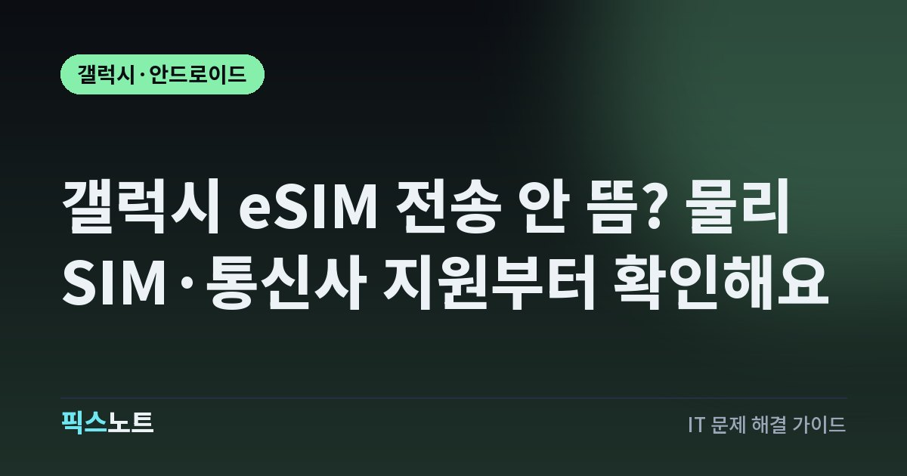

갤럭시 eSIM 전송 안 뜸? 물리 SIM·통신사 지원부터 확인해요
갤럭시 eSIM 전송 메뉴가 없거나 회색일 때 SIM 상태, 통신사 지원, 기기 조건을 순서대로 확인해요.

새 갤럭시에서 eSIM을 옮기려는데 'SIM 전송' 메뉴가 아예 안 보이거나 선택이 회색이라면 기기 고장부터 의심할 필요는 없어요. Samsung은 물리 SIM 삽입 여부, 이미 활성화된 eSIM, 통신사 지원, 기기 잠금 상태에 따라 전송 옵션이 보이지 않거나 사용할 수 없을 수 있다고 안내해요. 이전 방식에 따라 확인할 조건도 달라요.
전송 메뉴가 없는 위치부터 정확히 확인해요
Samsung 안내에서 Galaxy 기기의 일반적인 eSIM 추가 경로는 설정 > 연결 > SIM 관리자 > eSIM 추가예요. 지원되는 Galaxy·Android 기기끼리 즉시 전송을 할 수 있는 경우에는 이 화면에서 다른 Galaxy 또는 Android 휴대폰에서 SIM을 전송하는 항목이 나타날 수 있어요. 다만 초기 설정 마법사에서 보이는 메뉴와 설정을 끝낸 뒤 SIM 관리자에서 보이는 메뉴는 조건이 달라질 수 있어요. 처음 켰을 때 전송 항목이 없었다고 해서 나중에도 반드시 없는 것은 아니에요. 먼저 초기 설정 중인지, 이미 홈 화면까지 설정을 끝낸 상태인지 구분하고 SIM 관리자 안의 eSIM 추가 메뉴를 다시 확인해요. 메뉴 이름은 소프트웨어 버전과 지역에 따라 조금 달라질 수 있으니 'eSIM 추가' 아래 전송 관련 항목이 있는지를 보는 게 좋아요.
초기 설정 중이라면 물리 SIM과 활성 eSIM 상태를 봐요
Samsung의 eSIM 전송 문제 해결 문서에는 초기 설정 마법사에서 전송 옵션이 보이지 않는 이유로 물리 SIM이 삽입돼 있거나, 기기에 eSIM이 이미 활성화돼 있거나, 통신사가 전송을 지원하지 않거나, 초기 설정이 이미 완료된 경우를 안내해요. 따라서 새 기기를 막 설정하는 단계라면 SIM 상태를 먼저 확인하는 게 좋아요.
- 새 Galaxy에 물리 SIM이 꽂혀 있는지 확인해요.
- 이미 등록되거나 활성화된 eSIM 프로필이 있는지 SIM 관리자에서 확인해요.
- 초기 설정을 끝낸 상태라면 설정 > 연결 > SIM 관리자 > eSIM 추가 경로로 다시 들어가요.
- 전송 항목이 계속 없으면 통신사와 해당 기기 조합의 지원 여부를 확인해요.
- SIM을 빼거나 eSIM을 삭제하기 전에 현재 회선이 어디에 활성화돼 있는지 꼭 확인해요.
기존 회선이 필요한 상태에서 무작정 eSIM을 삭제하면 재발급 절차가 필요할 수 있어요.
Galaxy·Android 간 전송은 통신사 지원이 꼭 필요해요
eSIM 전송 기능은 휴대폰 두 대가 모두 기능을 갖췄다고 자동으로 되는 방식이 아니에요. Samsung은 지원 통신사 목록과 함께 eSIM Instant Transfer가 통신사, 기기, 계정 조건에 따라 달라질 수 있다고 안내해요. 공식 지원 페이지에는 한국의 KT, LG U+, SKT가 Galaxy·Android 간 eSIM Instant Transfer를 제공할 수 있는 통신사 목록에 포함돼 있어요. 다만 실제 사용 가능 여부는 가입한 요금제, 회선 상태, 기기 모델, 소프트웨어 버전에 따라 달라질 수 있으니 목록에 있다는 이유만으로 모든 조합에서 된다고 단정하면 안 돼요. 메뉴가 안 보인다면 통신사 고객센터에 'eSIM 신규 발급'이 아니라 '기기간 eSIM 전송'을 지원하는 회선인지 확인하는 편이 정확해요. 기업 회선이나 특수 요금제는 일반 개인 회선과 조건이 다를 수 있어요.
iPhone에서 Galaxy로 옮기는 경우는 따로 확인해요
기존 휴대폰이 iPhone이라면 Galaxy·Android끼리 옮기는 경우와 같은 지원 목록을 그대로 적용하면 안 돼요. Samsung 공식 페이지에서도 iPhone에서 Galaxy로 eSIM을 옮기는 항목과 Galaxy·Android 간 전송 항목을 따로 구분하고, 지원 통신사 목록도 별도로 안내해요. 그래서 한국 통신사가 Galaxy·Android 간 전송 목록에 있다는 사실만으로 iPhone에서 Galaxy로도 즉시 전송된다고 볼 수는 없어요. iPhone에서 넘어오는 상황이라면 사용 중인 통신사가 그 경로를 지원하는지 별도로 확인하고, 지원되지 않으면 통신사 앱이나 QR 코드, 고객센터를 통한 eSIM 재발급 절차를 사용해야 할 수 있어요. 기존 iPhone에서 회선을 먼저 삭제하기보다 새 Galaxy에서 활성화 방법이 확보된 뒤 이동하는 편이 안전해요.
전송 항목이 회색이면 SIM 상태와 잠금을 확인해요
전송 관련 SIM이 목록에는 보이는데 회색으로 선택되지 않는다면 Samsung이 안내하는 몇 가지 조건을 확인해요. 비활성화되거나 해지된 SIM, 호환되지 않는 SIM, 네트워크 잠금 상태에서는 정상적으로 선택되지 않을 수 있어요.
- 기존 휴대폰과 새 휴대폰을 모두 최신 소프트웨어로 업데이트할 수 있는 상태인지 확인해요.
- 두 기기에서 Wi-Fi와 Bluetooth를 켜고 가까이 둬요.
- 기존 회선이 해지되지 않았고 정상 사용 중인지 확인해요.
- 새 Galaxy가 특정 통신사에 네트워크 잠금된 기기인지 확인해요.
- 통신사에서 해당 계정과 기기에 eSIM 전송을 허용하는지 확인해요.
- 조건을 맞춘 뒤 SIM 관리자에서 전송 절차를 다시 시작해요.
회선 상태가 애매하다면 삭제와 재등록을 반복하기보다 통신사에서 현재 eSIM 활성 상태를 먼저 확인받는 편이 좋아요.
두 휴대폰의 연결 조건도 같이 맞춰야 해요
Samsung은 eSIM 전송을 시도할 때 두 기기의 소프트웨어를 최신 상태로 유지하고 Wi-Fi와 Bluetooth를 켜 두는 것을 안내해요. 기존 휴대폰과 새 휴대폰이 너무 멀리 떨어져 있거나 한쪽 Bluetooth가 꺼져 있으면 근처 기기 확인 단계가 진행되지 않을 수 있어요. 배터리가 부족해 중간에 꺼지는 상황도 피하는 게 좋아요. 전송을 시작하기 전에 두 기기 모두 충전 상태를 확인하고 화면 잠금을 해제할 수 있는지도 확인해요. 기존 기기에서 승인 메시지가 뜨는 방식이라면 그 기기를 사용할 수 있어야 해요. 같은 계정으로 로그인해야 하는 조건이 표시되는 경우에는 계정 상태도 확인해요. 여러 번 실패했다면 네트워크 설정을 무작정 초기화하기보다 어떤 단계에서 멈추는지 기록해 통신사나 Samsung 지원에 전달하는 편이 원인을 찾기 쉬워요.
전송이 계속 안 되면 재발급 경로를 확인해요
모든 조건을 맞췄는데도 전송 메뉴가 나타나지 않거나 계속 실패하면 해당 조합에서 즉시 전송이 지원되지 않을 가능성을 확인해야 해요. 이 경우 통신사가 제공하는 eSIM QR 코드, 앱, 고객센터를 통한 재발급 방법을 사용할 수 있어요. 새 eSIM이 정상 활성화되기 전에 기존 기기의 회선을 삭제하면 통화와 문자, 본인인증을 바로 쓰지 못할 수 있으니 순서를 조심해요. 문의할 때는 기존 기기와 새 기기 모델명, One UI와 Android 버전, 통신사, 현재 물리 SIM 또는 eSIM 사용 여부, 전송 메뉴가 아예 없는지 회색인지, 어느 단계에서 실패하는지를 함께 알려주세요. 이 정보가 있으면 기기 기능 문제인지 통신사 지원 조건인지 빠르게 나눌 수 있어요. 해외판이나 자급제·통신사 모델처럼 유통 경로가 다른 기기는 네트워크 잠금 여부도 같이 확인하는 편이 좋아요.
자주 묻는 질문
새 갤럭시에 eSIM 전송 메뉴가 아예 없으면 고장인가요?
바로 고장으로 볼 수는 없어요. 초기 설정 중 물리 SIM이 꽂혀 있거나 eSIM이 이미 활성화돼 있거나, 통신사와 기기 조합이 전송을 지원하지 않으면 옵션이 보이지 않을 수 있어요. 설정을 끝낸 뒤 SIM 관리자 > eSIM 추가에서도 다시 확인해요.
SKT·KT·LG U+면 갤럭시 eSIM 전송이 무조건 되나요?
Samsung 공식 페이지의 Galaxy·Android 간 지원 통신사 목록에는 한국의 SKT, KT, LG U+가 포함돼 있어요. 다만 실제 지원은 기기 모델, 회선, 계정, 소프트웨어 조건에 따라 달라질 수 있으니 사용 중인 회선이 기기간 전송 대상인지 통신사에 확인해요.
아이폰 eSIM을 갤럭시로 바로 옮길 수 있나요?
iPhone에서 Galaxy로 옮기는 경로는 Galaxy·Android끼리 전송하는 경로와 지원 조건이 달라요. 한국 통신사가 Galaxy 간 목록에 있다고 해서 iPhone에서의 즉시 전송까지 보장되는 것은 아니므로 통신사 지원 여부를 별도로 확인해야 해요.
eSIM 전송이 안 되면 기존 eSIM부터 삭제해도 되나요?
새 Galaxy에서 활성화 방법이 확보되기 전에 기존 eSIM을 먼저 삭제하는 건 피하는 편이 좋아요. 재발급이나 본인인증이 필요해질 수 있으므로 새 기기에서 전송 또는 재발급 절차를 확인하고, 통신사 안내에 맞춰 기존 회선을 정리해요.